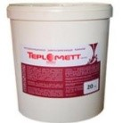

Виды теплоизоляции.
Теплоизоляция может быть внутренней и наружной. Наиболее эффективным материалом для внутреннего и наружного утепления признана волоконная теплоизоляция: стеклянная, базальтовая и шлаковая. Она незаменима для утепления неровных поверхностей, карманов и углов.
Вспененный пенополистирол

имеет более низкую теплопроводность, но большую паропроницаемость и горючесть по сравнению с волоконной, поэтому не рекомендован для вентилируемых каменных фасадов. Утеплитель может применяться для наружной теплоизоляции стен любого типа с последующим оштукатуриванием и не пригоден для утепления деревянных фасадов.
Экструдированный пенополистирол

обладает низкой теплопроводностью и высокой механической прочностью, устойчив к воде и замораживанию. Основным недостатком является отсутствие паропроницаемости.
Минеральная вата

обладает уникальными свойствами:Огнестойкость, Биологическая и химическая стойкость к различным агрессивным веществам, Незначительная степень термической, а также естественной усадки, Негигроскопичность, Паропроницаемость, Низкая теплопроводность, Высокая звукоизоляция, Высокая прочность и коррозийная устойчивост, Экологичность, Долговечность.
Жидкая теплоизоляция

Широкое применение получает сверхтонкая жидкая теплоизоляция. Ей по силам внутренние и наружные поверхности, газобетон, покрытия крыш, теплоизоляция трубопроводов и теплых полов. Жидкая теплоизоляция представляет сверхтонкое покрытие,
которое:
• не поддерживает горение;
• не создает дополнительной нагрузки;
• устойчиво к ультрафиолету и перепадам температур;
• устойчиво к агрессивным средам;
• легко наносится.